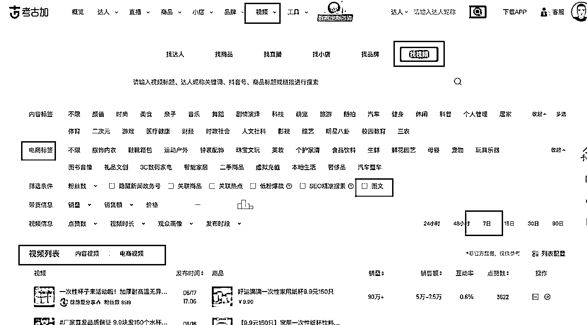
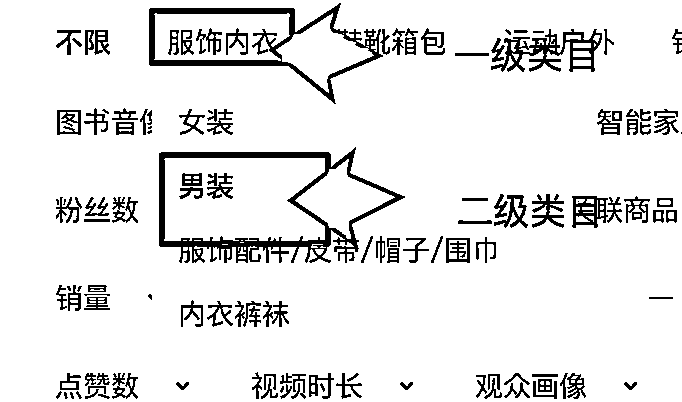
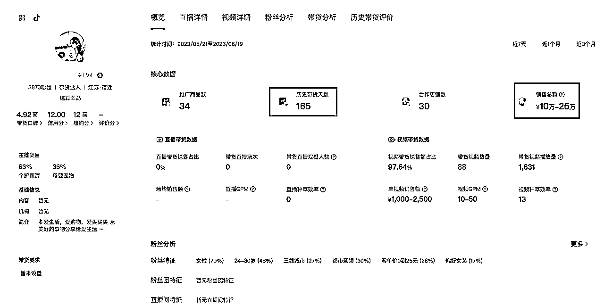
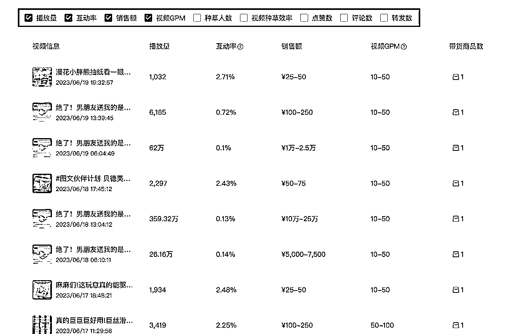
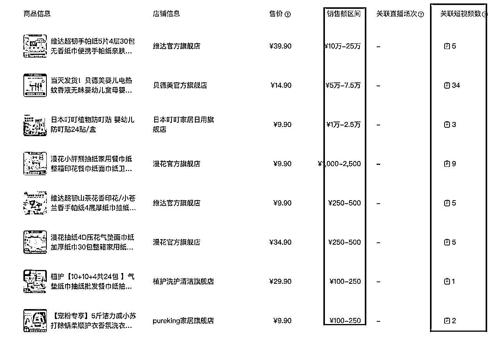
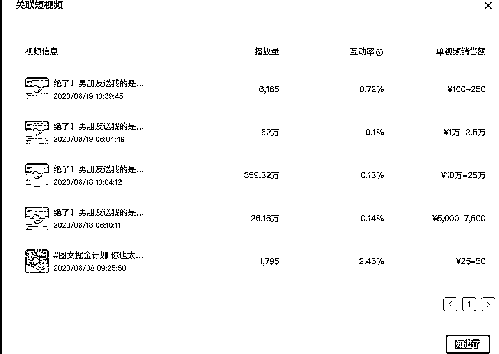

【两个小搞钱技能，帮你看清图文二创的全貌】
来源：https://y2mt3o47i3.feishu.cn/docx/AsqmdXxxhoAGD2xoiWqcnltznrg
大家好，我是郭晓文。江湖人称最懂新手的男人。
----
今天早上看到@盗坤 坤哥发了篇和图文二创相关的帖子，感兴趣的圈友很多。https://t.zsxq.com/0fTbH430T
我也来蹭一蹭热度，给大家提供一些马上就能学会的技能，帮大家看清图文二创的全貌。
（结尾有彩蛋，千万别错过）
什么叫看清图文二创的全貌呢？
说得直白一点，就是：
- 除了服装类目外，是否还有其他类目，也适合用图文二创的方式来做？
- 确定了类目后，如何找到更多用图文二创方式来操作的对标账号？
- 找到对标账号后，如何更全面的查看对标账号的各种数据？
一、发现更多适合用图文二创的方式来带货的类目和账号
打开抖音的第三方数据网站考古加：https://www.kaogujia.com
没有会员的，可以扫码领取7天的试用期
按照下图的方式，来筛选视频

具体操作：
- 点击视频，进入筛选视频的界面（如图所示）
- 筛选条件：勾选图文（只看图文二创形式带货的内容）
- 视频信息：勾选7日（7天内爆的图文都筛选出来）
- 电商标签栏目：一个栏目一个栏目的点过去（看出了服装类目外，是否还有其他类目适合用图文二创的形式带货）-----类似服装这样的大类目（一级类目），你还可以筛出里面的小类目（二级类目），如图所示

- 点击栏目后，在视频列表一览，内容视频和电商视频都看看。
- 内容视频，就是不挂小黄车的视频。在这里，你能找到很多只发电商内容，但是不挂车，引流到微信来变现的账号。
- 电商视频，就是挂小黄车的视频。在这里，你会看到很多直接用电商内容，直接挂车，在抖音内部变现的账号。
- 重复第4步，第5步，找到不同类目下面，分别用两种不同形式来变现的账号
>别急着往下看，直接一步步跟着照做。
相信我，不用懂那么多理论。你跟着一步步做下来，你一定会开眼，并且，顺带着掌握了一个找对标账号的技能。
二、找到对标账号后，如何更全面的查看对标账号的各种数据？
经过上一步，相信你已经找到了非常多的对标账号。
并且，也能在考古加的界面，看到这个账号非常详细的数据。
但，考古加毕竟是第三方数据，他的非常多数据，都是算法预估出来的，而不是准确的数据。
所以，这里要教大家一个官方的数据工具——巨量百应 的用法。
工具效果展示
先简单给大家展示一下巨量百应都可以看到什么内容：
- 对标账号的整体带货概况，包括：带货天数、短视频/直播/橱窗出单的比例、近7天/30天/90天带货总额、粉丝情况

- 所有短视频的具体数据，包括：发布时间、播放量、互动率、销售额、种草人数等

- 账号的选品情况，以及针对每个品的带货操作，包括：都带了哪些品？分别用了多少条视频来带货？

- 甚至是针对具体一个品，这个账号用了多少条视频来带货，具体是哪些视频，分别是什么时候发布的？

嗯，以上数据都是官方数据，非常准确。
工具实操演示
接下来，和大家详细讲解如何使用这个工具。
首先是门槛。要使用这个工具，至少需要你有一个可以挂橱窗的抖音号。
现在开橱窗的门槛是：
- 0粉丝
- 实名认证
（约等于没有门槛了）
想开通的小伙伴，参考下方操作：
主页（右上角三条横杠）➡️抖音创作者中心➡️变现任务➡️去带货
然后按要求完成实名认证和银行卡绑定，即可成功开通橱窗。
在有了一个可以挂橱窗的抖音号之后，你就能实现
「只需要有一个抖音号，你就可以通过巨量百应，把对标账号的数据扒个底朝天」
具体操作如下列视频所示：
（文中提到的插件，是圈友@水哥爱搞钱 写的，
链接: https://pan.baidu.com/s/1CSnqvqRefzhB0BLGTFa-Tg?pwd=2c3y 提取码: 2c3y --来自百度网盘超级会员v5的分享）
三、如何站在优秀同行的肩膀上？
感谢你看到这里。
如果你跟着一步步实操下来，那么恭喜你，你只花了半个小时不到的时间，实实在在掌握了两项搞钱技能：
- 用考古加找对标账号的技能
- 用巨量百应把对标账号扒干净的技能
掌握了这两个技能，你可以做到找到对标账号，并能把对标账号的大部分动作都看清楚。
然后呢？
接下来的操作，@刘小排 老师已经写得非常清楚了：守、破、离。
具体的操作，大家可以去阅读刘小排老师的这篇文章：（别都跑了，点个赞再走🤪）
《如何利用好别人的经验和认知》：https://t.zsxq.com/0fHE6FCek
写在最后
经常听到有些圈友反馈：帖子看得越多，自己越焦虑，现状还没有一丝改变。
本质原因，还是因为你只看不做。
有的人是不愿意做，有的人是不懂做。
不愿意做的小伙伴，我无能为力，你活该焦虑。
而看了帖子之后不懂怎么做的小伙伴，我想对你们说：
生财里面的文章，就是一块块的搞钱碎片。
- 有的碎片，是给你动力的，告诉你什么能做，什么正在风口上。比如坤哥的：闷声发财，抖音图文二创带货https://t.zsxq.com/0fTbH430T
- 有的碎片，是给你心法的，告诉你要怎么做，往哪个方向上用力。比如小排老师的：如何真正用好别人的经验和认知？https://t.zsxq.com/0fHE6FCek
- 有的碎片，是给你技术的，告诉你具体怎么做的，详细到每个动作。比如说各种各样的保姆级教程
这些碎片，都极有价值。
你要做的，就是根据自己的需求，努力去找到你需要的搞钱碎片，将其拼在一起，去踏踏实实执行。
如果有找不到的搞钱碎片，就去链接对应的圈友，想办法（用金钱、用诚意、用关系）去求助。
今天这篇文章：
- 最浅的一层，是想帮大家看到图文二创这个小风口的全貌
- 最深一层，是想让大家一起感受一下拼拼图的过程，为自己后续掌握拼拼图的能力打基础
希望，对大家有所帮助。
公众号：郭晓文
往期精华文章：
- https://t.zsxq.com/0eK5P83vF【生财使用实例&锦囊】从搞钱新手到最懂新手的男人，我在生财有术的三年
- https://t.zsxq.com/0cterLU8z【新人参加见面会后必读】如何正确利用见面会获得的信息？
- https://t.zsxq.com/0b7J0cQoU 【保姆级教程】从零到一打造一个高质量交付的训练营
- https://t.zsxq.com/0bxyNOlWA 【手把手带你把一篇精华帖转化成可执行的SOP，抓住下次来临的红利】
- https://t.zsxq.com/03UbAyJAE【如何利用生财有术，抓住视频号带货的红利】
- https://t.zsxq.com/fU3F2jU 《抖音引流Tips合集：鱼钩思维+企业号专属引流方式+常见误区》
- https://t.zsxq.com/niQ7iIe【红包封面售卖】一周时间，搭建一个自裂变的赚钱系统
- https://t.zsxq.com/RRrfqJE 【操作手册】公众号1个多月时间做到几乎篇篇5w+，进阶版「manchuan」玩法
- https://t.zsxq.com/uZnyr7I 抖音月均播放量4个亿的短视频创作心法
- https://t.zsxq.com/Uzv3Nrv 抖音小程序依旧可以稳定日入过千的玩法，实操手册
- https://t.zsxq.com/b2FuNnq 茶叶垂直领域，抖音直播做到月营业额200w